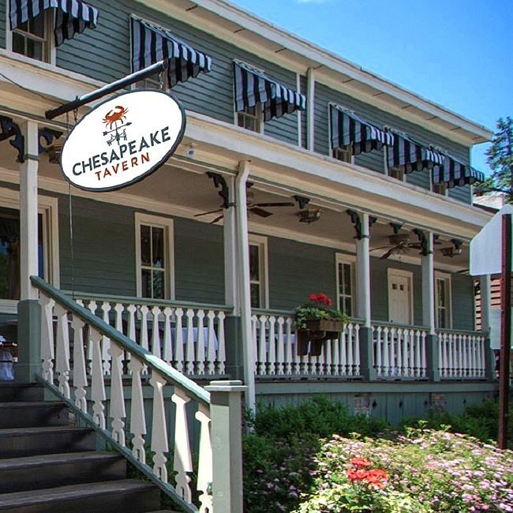

WELCOME TO CHESAPEAKE TAVERN!
Welcome to Chesapeake Tavern, a casual seafood restaurant in Long Valley,
New Jersey, serving the freshest seafood delivered daily alongside chef-driven
land-to-table favorites. Located in a historic building and inspired by the
beloved Chesapeake Bay Seafood Co.,Chesapeake Tavern offers a fresh take on the
local classic with standout dishes like Maryland Blue Claw Crab Cakes,
King Crab Legs, Fish & Chips, steamers, and rotating daily specials.
Our menu also features premium steaks, chops, and seasonal farm-fresh ingredients
sourced from nearby New Jersey farms, paired with local craft beers, curated wines,
and innovative seasonal cocktails. With rustic tavern charm, warm hospitality, and
high-quality ingredients at the center of every dish, Chesapeake Tavern is
Long Valley’s go-to destination for fresh seafood, elevated comfort food, and
unforgettable dining.
OUR MISSION
We Provide Exceptional Hospitality To Both Our Team & Guests.